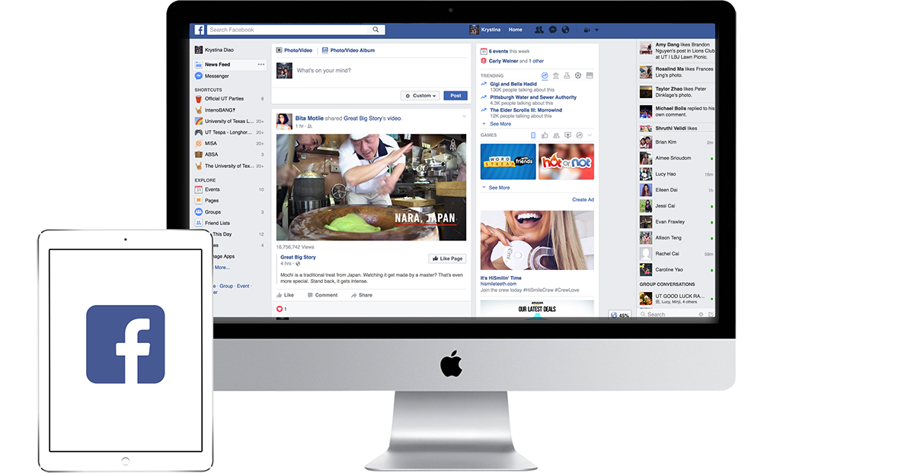

Facebook: A Product That I Love.

why facebook
I'm addicted to Facebook.And I'm not ashamed of it! I believe Facebook is a revolutionary product. Without doing much quantitative research, I'd like to simply speak from my personal experiences and observations to express my love for this product.
I started off as just another 7th grader who just created a Facebook account with a fake age. In 2008, all Facebook was to me was a chatting platform, a little more inconvenient than texting, and a picture sharing site of embarrassing, grainy flip phone selfies. Somehow, 8 years later, Facebook has transformed the way I interact with the world. Facebook is not only a platform for friends to stay connected (through chat, photo sharing, status updates), but also acts as a news source, gaming platform, marketing platform, VR platform, and so, so much more.
Facebook's growth and sheer impact on the world, literally connecting people from all across, internationally, is incredible. From all aspects, Facebook is continuously growing and developing. It continues to grow in features, competing face-to-face with Snapchat and other social media platforms. It continues to grow in connectivity, with VR, smart watches, and the internet of things. It continues to grow as a design giant, continuously updating with subtle design changes, from square corners to rounded corners and back again; from news feed to timeline to the next intuitive idea. What's even more intriguing is the manpower behind all of this growth - designers, developers, product managers, marketers, analysts, etc. all working to make this giant of a social media product (from my point of view, I no longer simply consider Facebook as "social media", but a giant of the internet overall).
Facebook's impact reaches beyond just the connection of people. Facebook's sheer size allows the creation of virality. The virality of videos, news stories, photos, and events pushes people to care. When you're more exposed to an issue, you care. The power that Facebook has to blow up a political story overnight or the power that the user base has to make a child with cancer's donation story go viral within hours is incomparable to much else.

Zuckerberg's 10 year roadmap for Facebook


Facebook's value as a news source